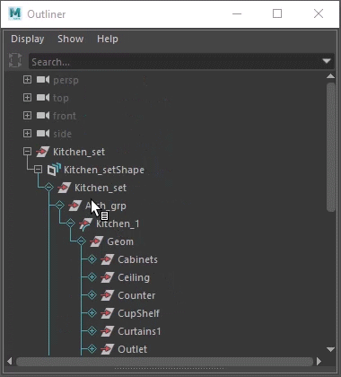
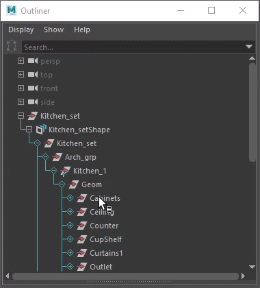
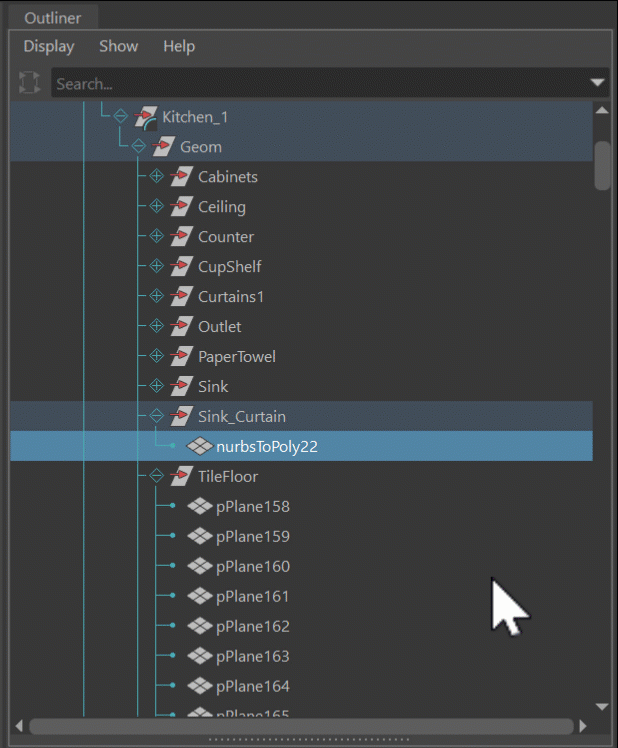
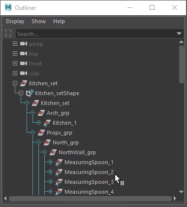
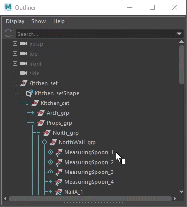
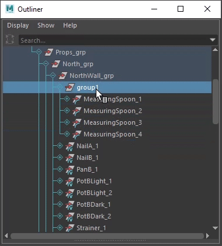

Work with prims in the Outliner
Working with USD data in the Outliner is unique to Maya, but it's based on concepts that are explained in the Pixar USD glossary.
Add prims in the Outliner

To add a prim, do the following:
- Right-click a proxy shape node or prim.
- Select Add Prim > [Prim Type]. The chosen prim type is added as a child to the parent node you selected. For more information on prim types, see Prim Type Icons.
Deactivate prims in the Outliner

You can deactivate and reactivate prims in the Outliner to disable/enable them from a scene.Inactive prims are denoted in the Outliner with a greyed out strikethrough.
- To make a prim inactive, right-click an active prim and select Deactivate Prim
- To reactivate an deactivated prim, do one of the following:
- Press **Ctrl + Z** to undo the action
- Right-click an inactive prim and select **Activate Prim**
- Select Display > Inactive Prims to toggle the visibility of Inactive Prims in the Outliner:
 When Inactive Prims is unchecked, all inactive prims are hidden in the Outliner.
 By default, the Inactive Prims display checkbox is checked. When checked, inactive prims can be seen in the Outliner.
Note: This option is saved as a user preference and will be remembered for the next time you open Maya.
Important: You cannot toggle the visibility of Inactive Prims in the Outliner if your stage is new and has not been saved to disk. Please save your stage to disk to proceed with the toggling visibility.
Important: You can delete a prim to clear it's definition. Pressing the delete key on a prim should clear it entirely. This only works if you are targeting edits to the prim's creating layer.
Copy and paste prims in the Outliner

You can copy a prim (Ctrl+C) in the outliner and paste it (Ctrl+V) in either of the following ways:
- pasting the prim as a sibling of the original prim when you paste immediately after copying the prim without deselecting it.
- pasting it as a child to another prim when you select a target prim before pasting.
In either case, the pasted prim will be selected upon creation.
Parent prims in the Outliner

You can parent objects in the Outliner to create hierarchical relationships, letting you group prims logically. You can parent the following:
- USD object and another USD object
- USD object to the Maya proxy shape object
Note: If a parent prim is invisible, its descendants are also invisible (right-click the parent prim and select Make Visible to see it in the viewport). Similarly, if a parent prim is inactive, its descendants are also inactive (right-click the parent prim and select Activate Prim to activate).
Important: Parenting geometric prims (Gprims) to one another is not allowed. Similarly, reparenting under an instance is not allowed. Many key features of USD apply hierarchically, such as activation, visibility and purpose. It is counter-productive to be unable to apply these operations to individual Gprims.
- To parent prims, do one of the following:
- Middle-click drag and drop a prim to re-parent it.
- Shift-select multiple prims and press P. The last prim you selected becomes the parent.
- To unparent a prim, do one of the following:
- Parent the prim to the root of your stage
- Select the prim you want to remove from the parent group, and press Shift+P
Cut prims in the Outliner
You can cut a prim (Ctrl+X) if it does not have any opinion on another layer. When a prim has an opinion on another layer, the cut will be blocked and you will not be able to paste it.
When you attempt to cut multiple prims and some of them are blocked (due to having an opinion on another layer), only the unblocked prims are cut and available for pasting. If you proceed to paste, only the unblocked prims will be pasted, while the blocked ones remain in their original position.
Group prims in the Outliner

- To group prims, Shift-select the prims you want to group together.
- Do one of the following:
- Select **Edit > Group**
- Press **Ctrl + G**
The prims are nested under a new prim called `group`.
Grouping Restrictions
Important: Groups are built off of the Model Hierarchy in MayaUSD, the model hierarchy defines a contiguous set of prims descending from a root prim on a stage, all of which are models. Model hierarchy is an index of the scene that is, strictly, a prefix, of the entire scene. All prims must adhere to the following three rules:
- Only group model prims can have other model children (assembly is a kind of group).
- A prim can only be a model if its parent prim is also a (group) model - except for the root model prim.
- No prim should have the exact kind "model", because "model" is neither a singular component nor a plural group container - it is just the "abstract" commonality between components and groups.
This implies that component models cannot have model children. To learn more about these rules, refer to Model Hierarchy in the Pixar USD Glossary.
Note: The following common restrictions apply and should be kept in mind when performing grouping functions as per the aforementioned rules.
- Cannot group prims under Xforms due to the model hierarchy. You will have to reparent prims as a workaround.
- Cannot ungroup prims commonly. Prims have to return to their place in the model hierarchy and hence you will have to reparent prims first instead to allow them to return to their place in the hierarchy. You will also have to ensure you have the correct edit target in the Layer Editor.
Rename prims in the Outliner

- To rename a prim in the Outliner, do one of the following:
- Double-click a prim
- Select a prim and press Enter
- Enter a new name and press Enter.
The change is reflected in both the Outliner and Attribute Editor.
Important: You cannot rename a prim if:
- The prim is defined on another layer
Tip: To complete the rename operation, set the target layer to the layer where the prim was defined
- The prim is defined inside a variant composition arc
Important: The creation of prims is allowed on weaker USD layers.
Related Concepts: If you're new to USD, you can get started by learning about relevant terms including; prim, def, specifier and reference.